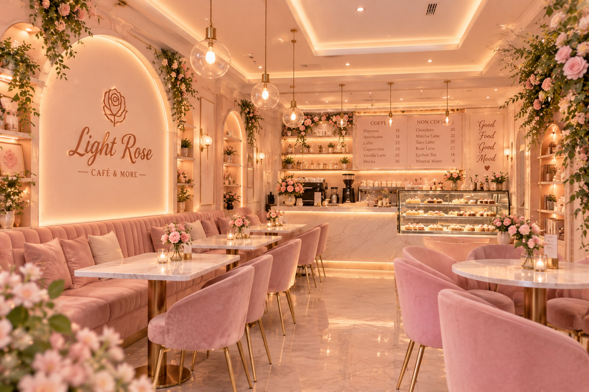
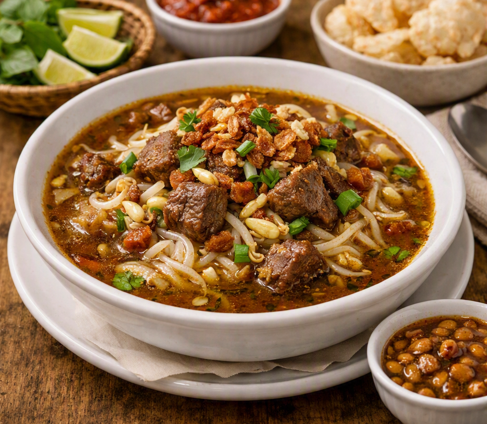
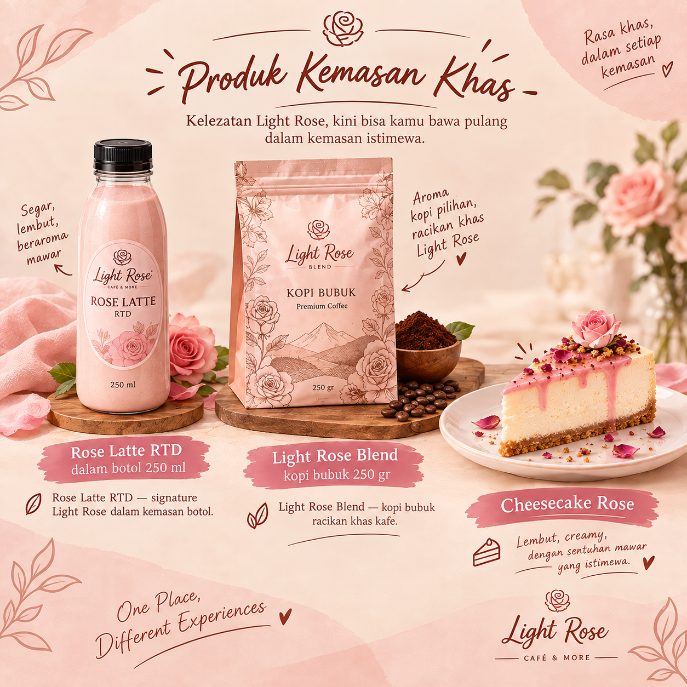
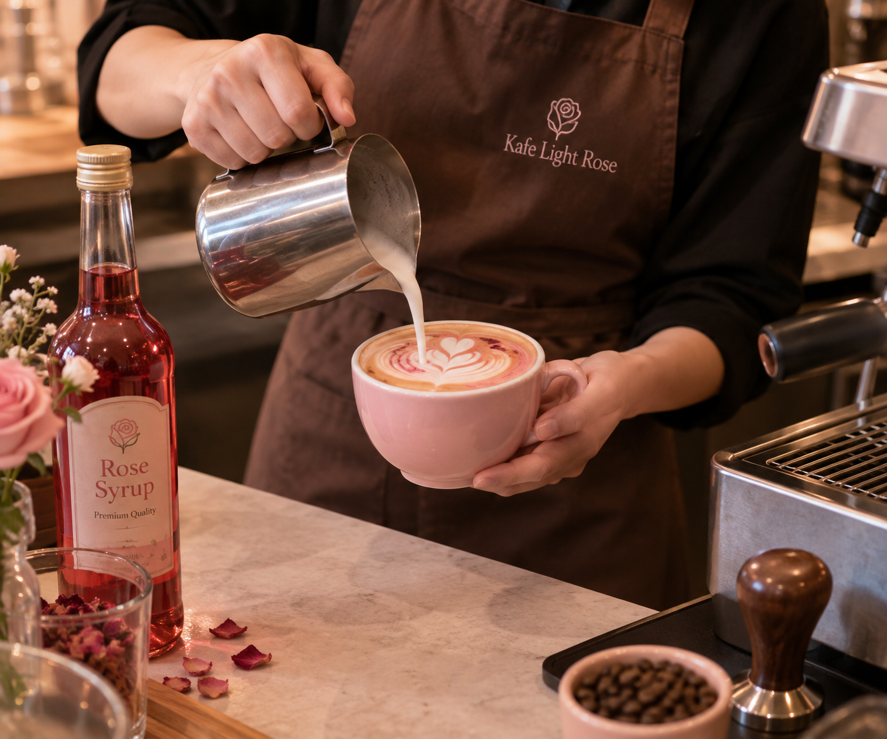

Galeri Cafe Light Rose
Suasana & Menu



Produk Kemasan Khas

Cerita Proses Seduh

Nada Khas Light Rose
Nada singkat menjadi identitas dan atmosfer khas Cafe Light Rose




Nada singkat menjadi identitas dan atmosfer khas Cafe Light Rose